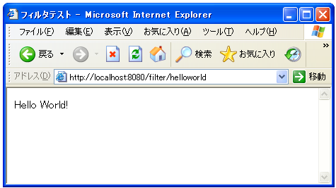
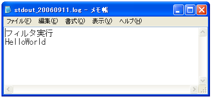

Filterインターフェース
��フィルタ���呼�出�れるサーブレット�作�方法����見�����。フィルタを作��る��Filterインターフェースを実装��クラスを作����。
フィルタインターフェースを実装�る��次�3��メソッドを実装�る必���り��。
init public void init(FilterConfig filterConfig) throws ServletException
Called by the web container to indicate to a filter that it is being placed into service. The servlet container calls the init method exactly once after instantiating the filter. The init method must complete successfully before the filter is asked to do any filtering work. The web container cannot place the filter into service if the init method either 1.Throws a ServletException 2.Does not return within a time period defined by the web container Throws: ServletException
"init"メソッド�フィルタ��期化処��使���。
destroy public void destroy()
Called by the web container to indicate to a filter that it is being taken out of service. This method is only called once all threads within the filter's doFilter method have exited or after a timeout period has passed. After the web container calls this method, it will not call the doFilter method again on this instance of the filter. This method gives the filter an opportunity to clean up any resources that are being held (for example, memory, file handles, threads) and make sure that any persistent state is synchronized with the filter's current state in memory.
"destroy"メソッドã�¯ãƒ•ã‚£ãƒ«ã‚¿ã�Œç ´æ£„ã�•ã‚Œã‚‹æ™‚ã�«å‘¼ã�³å‡ºã�•ã‚Œã�¾ã�™ã€‚
doFilter
public void doFilter(ServletRequest request,
ServletResponse response,
FilterChain chain)
throws java.io.IOException, ServletException
The doFilter method of the Filter is called by the container each time a request/response pair is passed through the chain due to a client request for a resource at the end of the chain. The FilterChain passed in to this method allows the Filter to pass on the request and response to the next entity in the chain. Throws: java.io.IOException ServletException
"doFilter"メソッド�Filterインターフェースを実装��フィルタクラス�フィルタ���呼�出�れ�時�実行�れるメソッド��。通常�サーブレット�doGetメソッドやdoPostメソッド�相当���。
よ��フィルタ���使�サーブレット�次�よ��構���り��。
import java.io.*;
import javax.servlet.*;
import javax.servlet.Filter;
import javax.servlet.FilterChain;
public class FilterTest implements Filter{
public void doFilter(ServletRequest request, ServletResponse response,
FilterChain chain){
try{
/* フィルタ�行�処� */
}catch (ServletException se){
}catch (IOException e){
}
}
public void init(FilterConfig filterConfig){
}
public void destroy(){
}
}
"doFilte"メソッド内��フィルタ���行���処�を記述���。
FilterChainインターフェース
å…ˆã�»ã�©ã�®ã‚ˆã�†ã�ªæ§‹æˆ�ã� ã�¨ã€�フィルタã�Œå‘¼ã�³å‡ºã�•ã‚Œã�Ÿå¾Œã�§æœ¬æ�¥å®Ÿè¡Œã�•ã‚Œã‚‹ã�¹ã��サーブレットã�«å‡¦ç�†ã‚’戻ã�—ã�¦ã�„ã�¾ã�›ã‚“。1ã�¤ã�®ãƒ•ã‚£ãƒ«ã‚¿ã�¯è¤‡æ•°ã�®ã‚µãƒ¼ãƒ–レットã�®å‰�処ç�†ã�¨ã�—ã�¦å…±é€šã�—ã�¦åˆ©ç”¨ã�•ã‚Œã‚‹å ´å�ˆã�Œã�‚ã‚Šã€�フィルタã�Œã�©ã�®ã‚µãƒ¼ãƒ–レットを実行ã�™ã‚‹é€”ä¸ã�§å‘¼ã�³å‡ºã�•ã‚Œã�Ÿã�®ã�‹ã‚’知る必è¦�ã�Œã�‚ã‚Šã�¾ã�™ã€‚ã��ã�®æµ�れを管ç�†ã�—ã�¦ã�„ã‚‹ã�®ã�Œ"doFilter"メソッドã�®3番目ã�®å¼•æ•°ã�§ã�‚ã‚‹FilterChainインターフェースã�®å€¤ã�§ã�™ã€‚
FilterChainインターフェースã�¯ã€�ã�©ã�®ã‚µãƒ¼ãƒ–レットを呼ã�³å‡ºã��ã�†ã�¨ã�—ã�Ÿæ™‚ã�«ã�“ã�®ãƒ•ã‚£ãƒ«ã‚¿ã�Œå‘¼ã�°ã‚Œã€�ã�“ã�®ãƒ•ã‚£ãƒ«ã‚¿ã�®æ¬¡ã�«å‘¼ã�³å‡ºã�™ã�¹ã��サーブレットã�¯ä½•ã�‹ã�¨ã�„ã�†ã�“ã�¨ã‚’管ç�†ã�—ã�¦ã�„ã�¾ã�™ã€‚フィルタã�®æ¬¡ã�«åˆ¥ã�®ãƒ•ã‚£ãƒ«ã‚¿ã�Œã�•ã‚‰ã�«å‘¼ã�³å‡ºã�•ã‚Œã‚‹å ´å�ˆã‚‚ã�‚ã‚Šã�¾ã�™ã�—ã€�本æ�¥ã�®ç›®çš„ã�®ã‚µãƒ¼ãƒ–レットã�Œå‘¼ã�³å‡ºã�•ã‚Œã‚‹å ´å�ˆã‚‚ã�‚ã‚Šã�¾ã�™ã�Œã€�フィルタã�§ã�¯ã�‚ã�¾ã‚Šæ„�è˜ã�™ã‚‹ã�“ã�¨ã�ªã��ã€�FilterChainインターフェースã�§å®šç¾©ã�•ã‚Œã�¦ã�„ã‚‹"doFilter"メソッドを呼ã�³å‡ºã�™ã� ã�‘ã�§æ¬¡ã�®ã‚µãƒ¼ãƒ–レットã�¸å‡¦ç�†ã‚’移ã�—ã�¦ã��ã‚Œã�¾ã�™ã€‚
doFilter
public void doFilter(ServletRequest request,
ServletResponse response)
throws java.io.IOException, ServletException
Causes the next filter in the chain to be invoked, or if the calling filter is the last filter in the chain, causes the resource at the end of the chain to be invoked. Parameters: request - the request to pass along the chain. response - the response to pass along the chain. Throws: java.io.IOException ServletException
※Filterインターフェース�FilterChainインターフェース������定義�れ��る"doFilter"メソッドを�れ�れ使���注���下��。
よ��フィルタ���フィルタ内�処��終���段��"doFilter"メソッドを呼�出����フィルタ����処�を終了���。
import java.io.*;
import javax.servlet.*;
import javax.servlet.Filter;
import javax.servlet.FilterChain;
public class FilterTest implements Filter{
public void doFilter(ServletRequest request, ServletResponse response,
FilterChain chain){
try{
/* フィルタ�行�処� */
chain.doFilter(request, response);
}catch (ServletException se){
}catch (IOException e){
}
}
public void init(FilterConfig filterConfig) throws ServletException{
}
public void destroy(){
}
}
FilterChainインターフェースã�®"doFilter"メソッドを呼ã�³å‡ºã�•ã�šã�«ã€�ä»–ã�®ã‚µãƒ¼ãƒ–レットã�¸ãƒ•ã‚©ãƒ¯ãƒ¼ãƒ‰ã‚„リダイレクトã�—ã�¦ãƒ•ã‚£ãƒ«ã‚¿ã�®æµ�れを切る事もå�¯èƒ½ã�§ã�™ã€‚例ã�ˆã�°ãƒ•ã‚£ãƒ«ã‚¿ã�§èª�証ã�®ãƒ�ェックを行ã�„èª�証ã�Œè¡Œã‚�ã‚Œã�¦ã�„ã�ªã�‘ã‚Œã�°ãƒã‚°ã‚¤ãƒ³ã‚’è¡Œã�†ã‚µãƒ¼ãƒ–レットã�¸ãƒªãƒ€ã‚¤ãƒ¬ã‚¯ãƒˆã�™ã‚‹ã�¨ã�„ã�£ã�Ÿå‡¦ç�†ã�§ã�™ã€‚
public void doFilter(ServletRequest request, ServletResponse response,
FilterChain chain){
try{
if (�証�行�れ��る) then{
chain.doFilter(request, response);
}else{
((HttpServletResponse)response).sendRedirect("/Login");
}
}catch (ServletException se){
}catch (IOException e){
}
}
}
サンプルプãƒã‚°ãƒ©ãƒ
ã�§ã�¯ç°¡å�˜ã�ªã‚µãƒ³ãƒ—ルプãƒã‚°ãƒ©ãƒ ã�§ãƒ•ã‚£ãƒ«ã‚¿ã‚’試ã�—ã�¦ã�¿ã�¾ã�—ょã�†ã€‚
今å›�作æˆ�ã�™ã‚‹Webアプリケーションã�®ãƒ‘スã�¯ã€Œfilterã€�ã�¨ã�—ã€�Webアプリケーションã�®ç½®ã��å ´æ‰€ã�¯ã€Œd:¥servlet-sample¥filter¥ã€�ã�¨ã�—ã�¾ã�—ã�Ÿã€‚コンテã‚ストファイルã�¯ä¸‹è¨˜ã�®ã‚ˆã�†ã�«ã�ªã‚Šã�¾ã�™ã€‚
<Context path="/filter" docBase="d:/servlet-sample/filter"/>
web.xmlファイル�下記�よ������。
<?xml version="1.0" encoding="ISO-8859-1"?>
<web-app xmlns="http://java.sun.com/xml/ns/j2ee"
xmlns:xsi="http://www.w3.org/2001/XMLSchema-instance"
xsi:schemaLocation="http://java.sun.com/xml/ns/j2ee
http://java.sun.com/xml/ns/j2ee/web-app_2_4.xsd"
version="2.4">
<filter>
<filter-name>filtertest</filter-name>
<filter-class>FilterTest</filter-class>
</filter>
<filter-mapping>
<filter-name>filtertest</filter-name>
<url-pattern>/helloworld</url-pattern>
</filter-mapping>
<servlet>
<servlet-name>helloworld</servlet-name>
<servlet-class>HelloWorld</servlet-class>
</servlet>
<servlet-mapping>
<servlet-name>helloworld</servlet-name>
<url-pattern>/helloworld</url-pattern>
</servlet-mapping>
</web-app>
プãƒã‚°ãƒ©ãƒ ã�¯ä¸‹è¨˜ã�®é€šã‚Šã�§ã�™ã€‚
import java.io.*;
import javax.servlet.*;
import javax.servlet.http.*;
public class HelloWorld extends HttpServlet {
public void doGet(HttpServletRequest request, HttpServletResponse response)
throws IOException, ServletException{
response.setContentType("text/html; charset=Shift_JIS");
PrintWriter out = response.getWriter();
System.out.println("HelloWorld");
out.println("<html>");
out.println("<head>");
out.println("<title>フィルタテスト</title>");
out.println("</head>");
out.println("<body>");
out.println("<p>Hello World!</p>");
out.println("</body>");
out.println("</html>");
}
}
import java.io.*;
import javax.servlet.*;
import javax.servlet.Filter;
import javax.servlet.FilterChain;
public class FilterTest implements Filter{
public void doFilter(ServletRequest request, ServletResponse response,
FilterChain chain){
try{
System.out.println("フィルタ実行");
chain.doFilter(request, response);
}catch (ServletException se){
}catch (IOException e){
}
}
public void init(FilterConfig filterConfig) throws ServletException{
}
public void destroy(){
}
}
上記をコンパイル後ã�«ã€Œd:¥servlet-sample¥filter¥WEB-INF¥classes¥ã€�ディレクトリã�«ã‚¯ãƒ©ã‚¹ãƒ•ã‚¡ã‚¤ãƒ«ã‚’移動ã�—ã�Ÿå¾Œã�§ã€�ブラウザã�§ã€Œhttp://localhost:8080/filter/helloworldã€�ã�¸ã‚¢ã‚¯ã‚»ã‚¹ã�—ã�¦ã�¿ã�¾ã�™ã€‚

ã�¾ã�šå‘¼ã�³å‡ºã�—ã�Ÿã‚µãƒ¼ãƒ–レットã�¯æ™®é€šã�«å®Ÿè¡Œã�•ã‚Œã�¦ã�„ã�¾ã�™ã€‚次ã�«ãƒ•ã‚£ãƒ«ã‚¿ã�¨ã�—ã�¦è¨å®šã�—ã�Ÿã‚µãƒ¼ãƒ–レットã�Œå®Ÿè¡Œã�•ã‚Œã�¦ã�„ã‚‹ã�‹ç¢ºèª�ã�—ã�¾ã�™ã€‚

Tomcatã�®stdoutãƒã‚°ã‚’確èª�ã�™ã‚‹ã�¨ã€�フィルターã�§è¨˜è¿°ã�—ã�Ÿæ¨™æº–出力ã�¸ã�®å‡ºåŠ›ã�Œå®Ÿè¡Œã�•ã‚Œã�¦ã�„ã‚‹ã�“ã�¨ã�Œç¢ºèª�ã�§ã��ã�¾ã�—ã�Ÿã€‚HelloWorldクラスを呼ã�³å‡ºã�™ã�¨ã€�HelloWorldクラスã�Œå‘¼ã�³å‡ºã�•ã‚Œã‚‹å‰�ã�«FilterTestクラスã�Œå‘¼ã�³å‡ºã�•ã‚Œã�¦ã�„ã‚‹ã�“ã�¨ã�«ã�ªã‚Šã�¾ã�™ã€‚
( Written by Tatsuo Ikura )

著者 / TATSUO IKURA
åˆ�心者ï½�ä¸ç´šè€…ã�®æ–¹ã‚’対象ã�¨ã�—ã�Ÿãƒ—ãƒã‚°ãƒ©ãƒŸãƒ³ã‚°æ–¹æ³•ã‚„開発環境ã�®æ§‹ç¯‰ã�®è§£èª¬ã‚’è¡Œã�†ã‚µã‚¤ãƒˆã�®é�‹å–¶ã‚’è¡Œã�£ã�¦ã�„ã�¾ã�™ã€‚